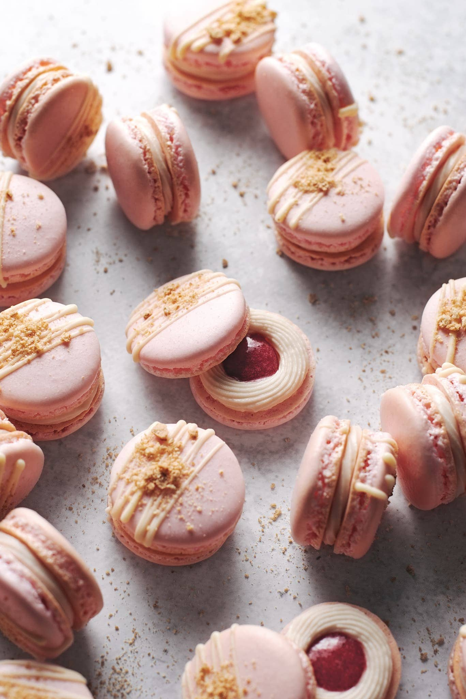
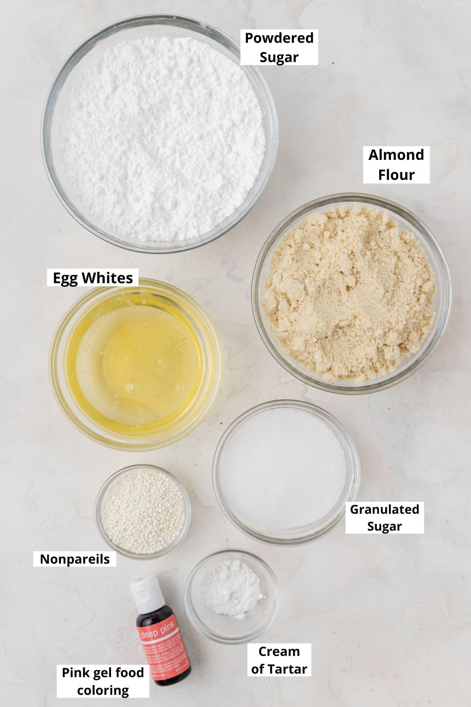
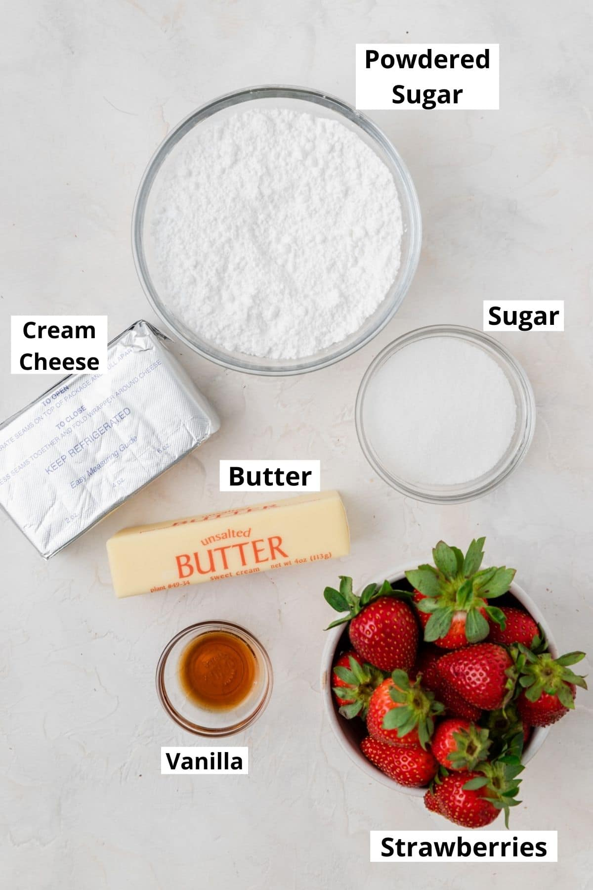
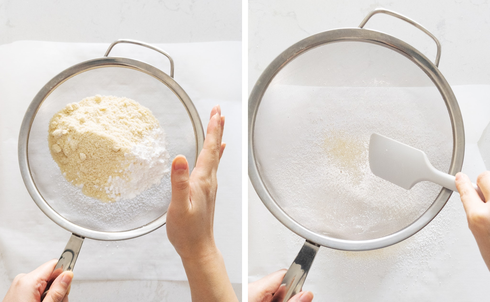
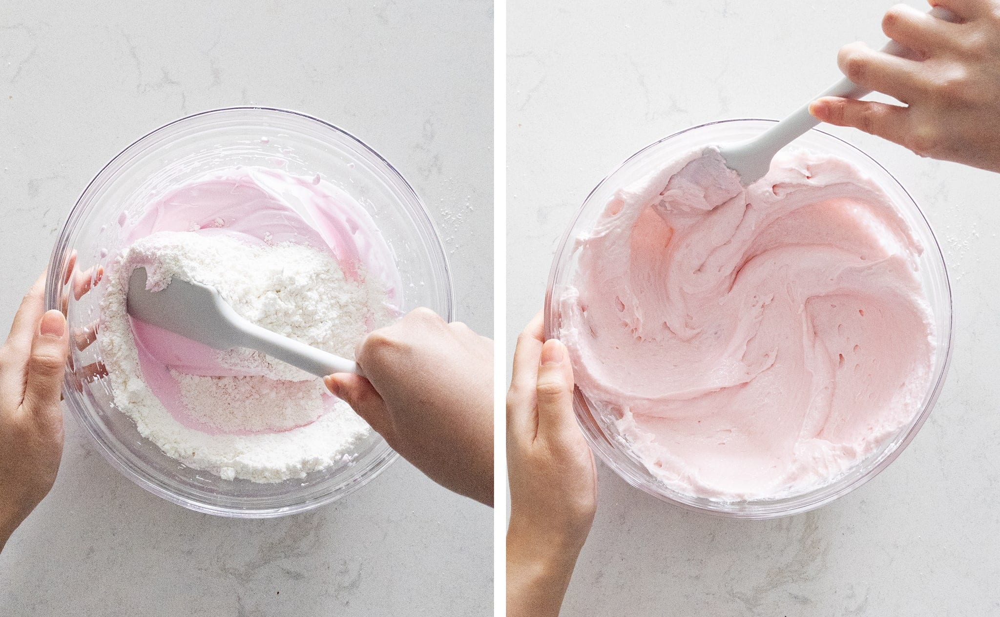
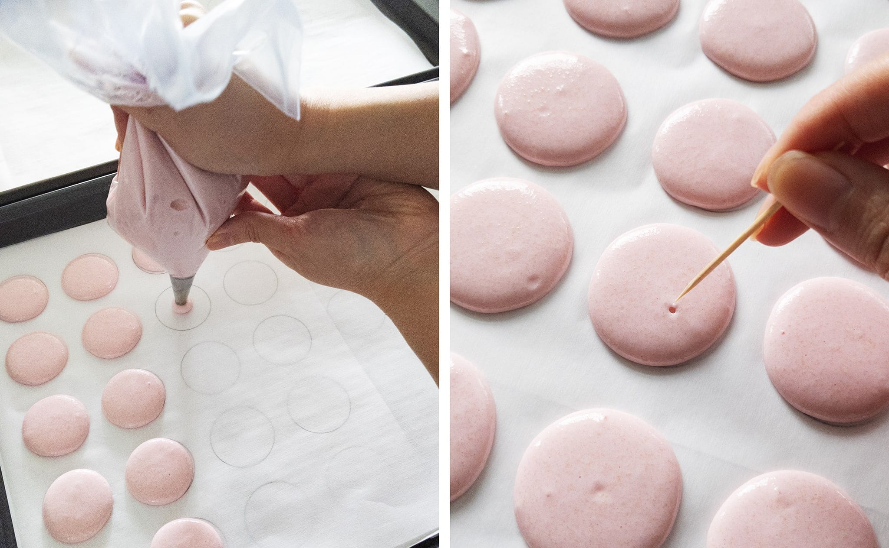
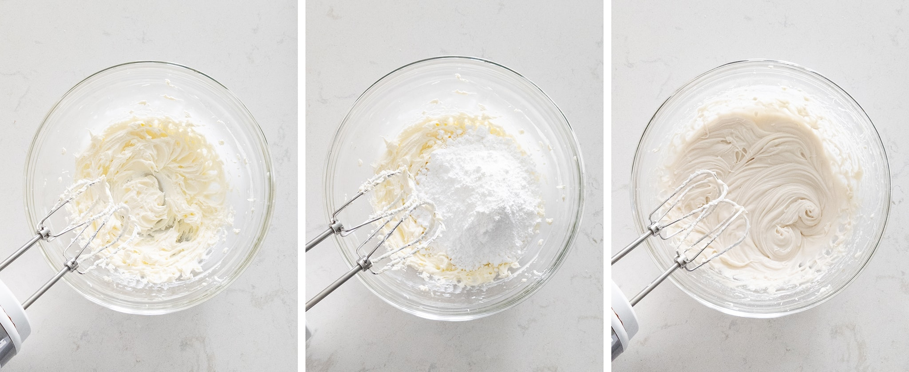
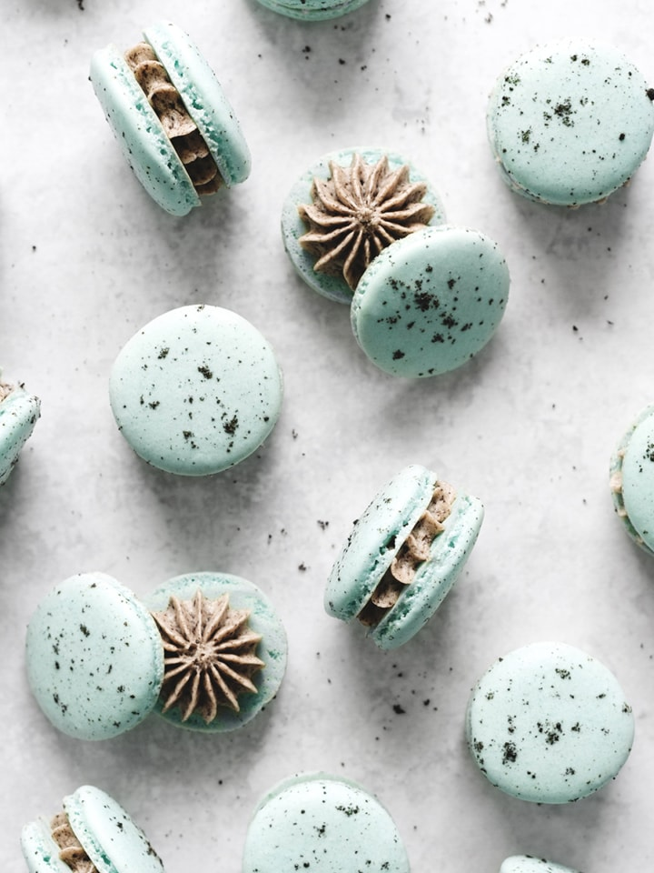
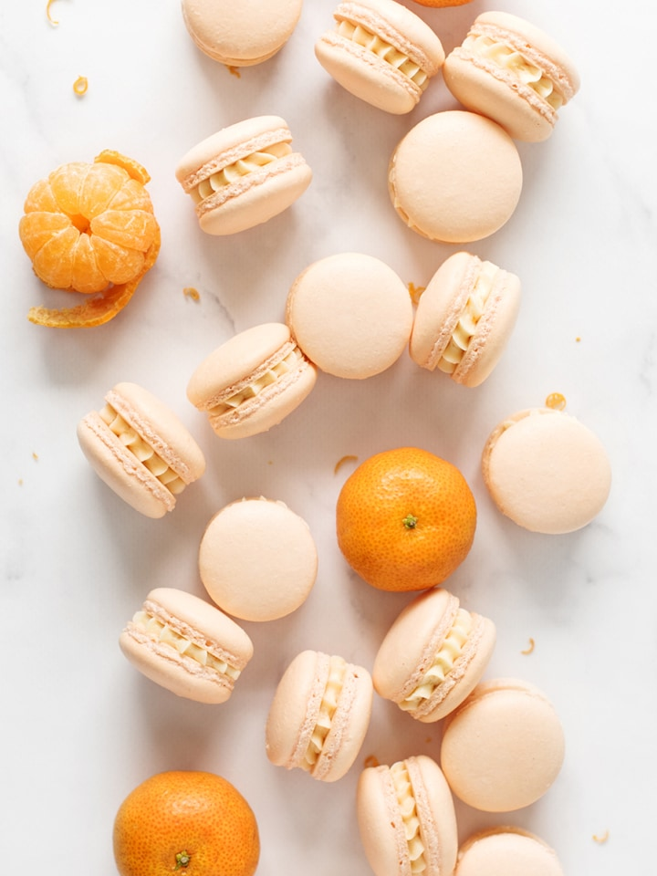
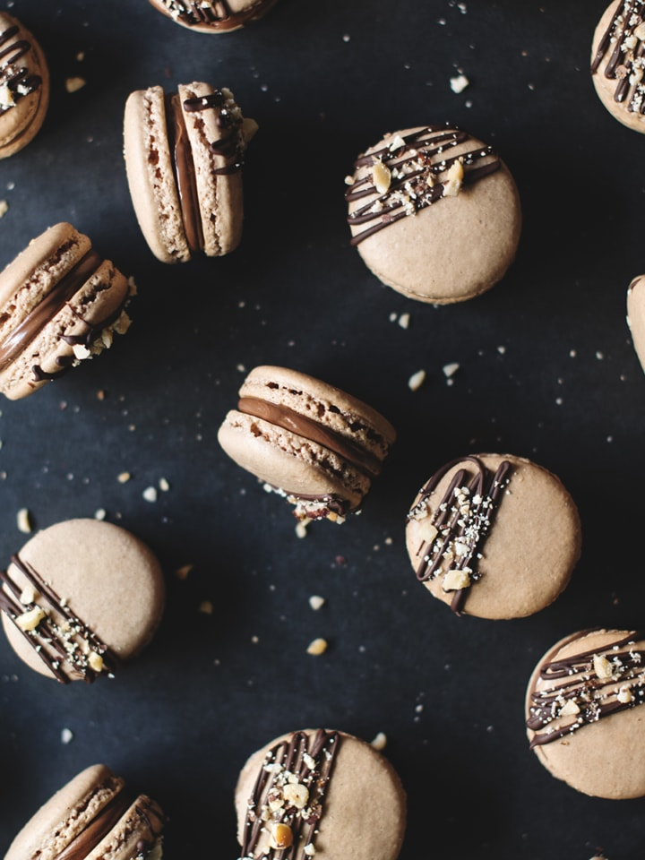

BONBON COOKBOOK
Strawberry Cheesecake Macarons

Prep Time
1 hr 30 minutes
Cooking Time 30 minutes
Total Time
2 hrs
Ingredients
Macarons
-
85 g super-fine almond flour
-
150 g powdered sugar
-
90 g egg whites, room temperature & aged for 24 hrs
-
80 g granulated sugar
-
1 drop pink gel food colouring
Strawberry Jam Filling
-
100 g frozen strawberries
-
3 tablespoons granulated sugar
Cream Cheese Filling
-
100 g cream cheese, softened
-
200 g powdered sugar
-
½ teaspoon vanilla extract
Toppings
-
50 g white chocolate, melted
-
50 g white chocolate, melted


Instructions
Macarons Shells
-
Line two baking sheets with parchment cut to size so that they
lie flat and set aside.
-
In a medium bowl, stir together almond flour and powdered
sugar. Using a fine mesh sieve, sift onto a sheet of parchment
paper or into another bowl. Scrape the bottom of the sieve
with a spatula and discard any remaining large bits of almond
flour. Set aside.
-
In a large mixing bowl, use an electric mixer to beat egg
whites on low-medium speed until it becomes frothy like
cappuccino foam. Slowly sprinkle in 1-2 tablespoons of
granulated sugar at a time and beat on medium speed between
each addition. When all the sugar has been combined, keep
beating at medium-high speed until the meringue reaches soft
peaks. Add the gel food colouring at this point. Continue
beating until the meringue reaches stiff peaks.

-
Add half of the sifted almond flour mixture into the meringue
and fold with a spatula until roughly incorporated. Fold in
the rest of the almond flour until roughly combined.
-
Smear the batter against the sides of the bowl to deflate
air out of the batter. Scoop it all back up with your
spatula and fold a few times. Repeat this motion about 3-4
times and regularly check if the batter is at the correct
consistency by scooping up some batter with your spatula and
letting it fall back down into the bowl. If the batter
smoothly ribbons off the spatula without breaking, it's ready.

-
Transfer the batter to a piping back fitted with a small
round piping tip. Hold the bag perpendicular to the baking
sheet, slightly above the surface, and squeeze the batter
out, staying in the same spot, and let the batter move
outwards into a circle by itself. Do a small, circular
flick with the piping tip to stop piping.
-
Lift and drop the baking sheets onto the counter a few
times to bring air bubbles to the surface. Use a toothpick
to pop any visible air bubbles. Let the macarons rest on
the counter for about 1 hour they are slightly dry
to the touch.

-
Meanwhile, preheat the oven to 290°F. Bake macarons
one tray at a time for about 15 minutes or until the
tops are just barely wobbly when pushed and bottoms peel
off the parchment cleanly. Let cool completely on the
baking sheet.
Strawberry Jam Filling
-
In a small saucepan, heat frozen strawberries and sugar
on medium heat until it boils, stirring occasionally and
mash the softened strawberries to release their juices.
Let it boil for about 10 minutes or until it becomes
thick and jammy.
-
Push the jam through a fine mesh sieve into a small
container to cool completely before transferring to a
piping bag. Discard any remaining strawberry pulp.
Cream Cheese Filling
-
In a mixing bowl, use an electric mixer to beat
cream cheese until smooth. Add in the powdered sugar
and mix on low until combined. Add in the vanilla extract
and continue beating on medium-high speed until it
becomes smooth and creamy. Transfer frosting to a
piping bag fitted with a small round or star tip.

ASSEMBLING THE MACARONS
-
Match macarons up into similarly sized and shaped pairs.
-
Pipe a ring of cream cheese frosting around the outer
edge of each macaron. Pipe a dollop of strawberry jam
into the middle of the ring. Gently press another
macaron on top to sandwich.
-
Drizzle melted white chocolate across the tops of
the macarons and sprinkle with graham cracker crumbs
before the chocolate hardens.
Notes
-
Strawberry jam: You can use fresh strawberries instead of
frozen. Just add 1-2 tablespoons of water to help them come
to a boil. Or you can skip this altogether and use a
store-bought strawberry jam.
NUTRITION
Calories: 127kcal | Carbohydrates: 22g | Protein: 2g | Fat: 4g |
Saturated Fat: 1g |
Polyunsaturated Fat: 1g | Monounsaturated Fat: 1g |
Cholesterol: 5mg | Sodium: 26mg |
Potassium: 26mg | Fiber: 1g | Sugar: 21g | Vitamin A: 57IU |
Vitamin C: 2mg | Calcium: 17mg | Iron: 1mg
KEYWORDS
strawberry cheesecake macarons, strawberry macarons,
strawberry shortcake macarons
MORE MACARONS


